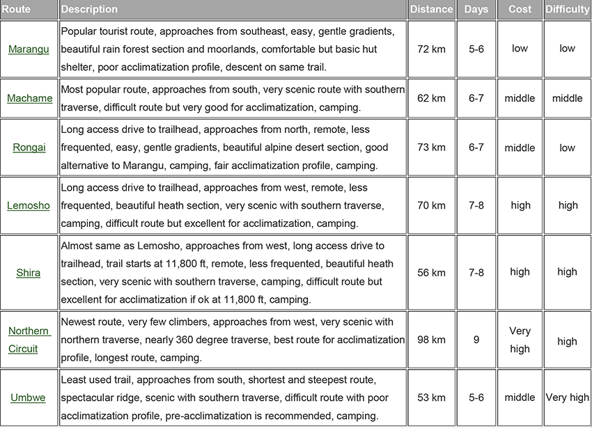
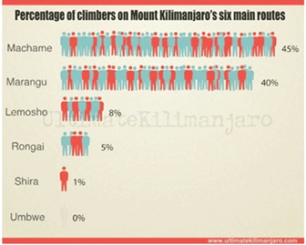
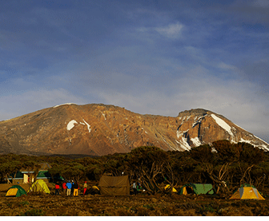

Moutain
Kilimanjaro
As the highest freestanding mountain in the world, Kilimanjaro located in northeastern Tanzania. It is the pride of Africans. But it has some experts predict that the glacier
s on Kilimanjaro will disappear in ten years, at that time, people will never see the snow-capped Kilimanjaro again.
Now the Mt Kilimanjaro National Park has become one of Tanzania’s most visited parks. Many people come here is all about gazing in awe at a mountain on the equator capped with snow, and to climb to the top of Africa.
A trek up Kili lures around 25,000 trekkers each year, but don’t be fooled by the number of people who climb Kilimanjaro, this is a very serious undertaking. While many thousands of trekkers reach Uhuru Peak without major difficulty, many more don’t make it because they suffer altitude sickness and other problems.
7 climbing routes
  How to reach a higher probability to the top
Choose a longer route that you have more time to acclimatize if you are unsure of your ability. Adding a day or two can increase your odds of success.
Walk slowly enables you to acclimatize. Slow paced walk can help to have a high success rate to the top.
Drink plenty of water can reduce the possibility of altitude sickness.
Find a solid guide service. Good guide is better trained to deal with altitude sickness and other emergencies on the mountain. Your life is priceless, and certainly worth more than saving a few hundred dollars. Additionally, the good operators will serve better food and have better equipment - both of which keep you healthier and stronger on the mountain.
Take training seriously. The summit and immediate long descent is very tough. Do not underestimate how tiring it is to come from 19,340 feet to 9,000 feet.
Bring the right gear. You need apparel that will keep you warm and dry. You also need well broken in, comfortable boots. You will be spending a lot of time in them. Take care of your feet too.
How to reach a higher probability to the top
Over 95% of our clients successfully climbed to the top of Mt Kilimanjaro. This mainly due to we provide following professional services:
1．Experienced guide
2．Professional mountaineering equipment
3．Clean accommodation
4．High quality of food supply
5．Professional service team
6．Reliable medical care
We are highly pleasure to greet you on the roof of Africa.